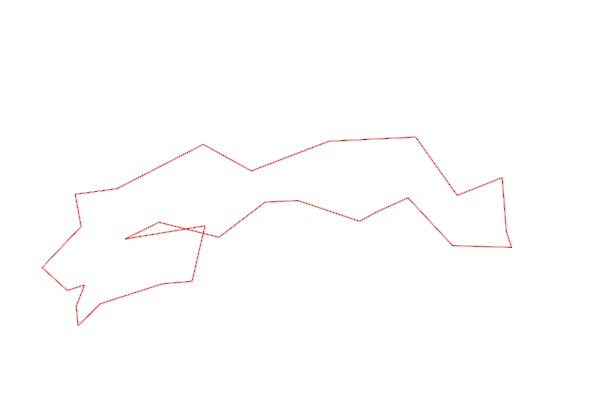
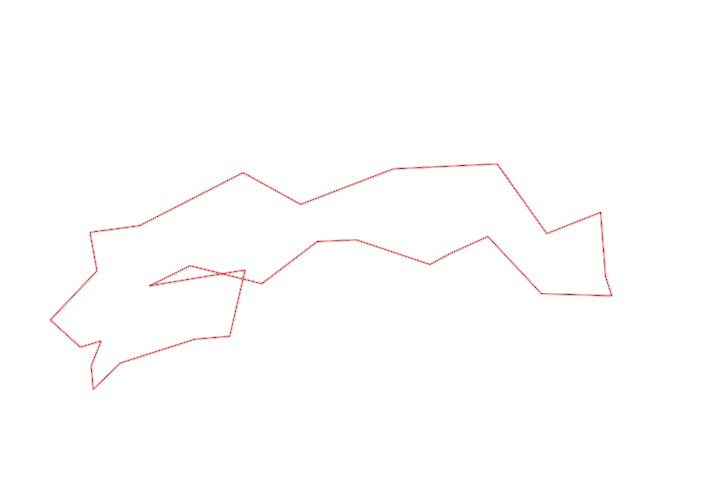

| Control |
Points |
Time Punched |
Distance |
Your Time |
Pace |
Place |
Fastest Time |
Median Time |
% Behind Fastest |
| 38 |
30 |
|
0.2 |
0:00:43 |
03:35 |
1 / 3 |
0:00:43 |
0:00:54 |
0% |
| 60 |
60 |
|
0.11 |
0:00:56 |
08:29 |
8 / 19 |
0:00:42 |
0:00:57 |
33% |
| 41 |
40 |
|
0.23 |
0:01:41 |
07:19 |
1 / 7 |
0:01:41 |
0:01:52 |
0% |
| 40 |
40 |
|
0.11 |
0:00:48 |
07:16 |
4 / 24 |
0:00:45 |
0:01:00 |
6% |
| 71 |
70 |
|
0.07 |
0:00:53 |
12:37 |
4 / 12 |
0:00:34 |
0:01:00 |
55% |
| 54 |
50 |
|
0.08 |
0:00:43 |
08:57 |
14 / 33 |
0:00:27 |
0:00:45 |
59% |
| 69 |
60 |
|
0.07 |
0:02:22 |
33:48 |
14 / 20 |
0:01:00 |
0:01:56 |
136% |
| 53 |
50 |
|
0.12 |
0:01:52 |
15:33 |
14 / 26 |
0:01:16 |
0:01:51 |
47% |
| 44 |
40 |
|
0.2 |
0:01:31 |
07:35 |
8 / 22 |
0:00:39 |
0:01:40 |
133% |
| 32 |
30 |
|
0.12 |
0:01:04 |
08:53 |
8 / 22 |
0:00:43 |
0:01:19 |
48% |
| 63 |
60 |
|
0.15 |
0:01:24 |
09:20 |
9 / 25 |
0:01:05 |
0:01:29 |
29% |
| 107 |
100 |
|
0.35 |
0:03:53 |
11:05 |
12 / 22 |
0:02:14 |
0:03:49 |
73% |
| 57 |
50 |
|
0.2 |
0:03:04 |
15:20 |
7 / 22 |
0:01:54 |
0:03:53 |
61% |
| 123 |
20 |
|
0.3 |
0:04:40 |
15:33 |
2 / 2 |
0:03:31 |
0:04:05 |
32% |
| 109 |
100 |
|
0.31 |
0:03:42 |
11:56 |
6 / 7 |
0:02:09 |
0:02:32 |
72% |
| 52 |
50 |
|
0.26 |
0:04:01 |
15:26 |
6 / 6 |
0:02:01 |
0:02:27 |
99% |
| 81 |
80 |
|
0.17 |
0:02:36 |
15:17 |
4 / 4 |
0:01:42 |
0:01:44 |
52% |
| 56 |
50 |
|
0.19 |
0:02:56 |
15:26 |
3 / 3 |
0:01:44 |
0:01:51 |
69% |
| 75 |
70 |
|
0.06 |
0:00:39 |
10:50 |
2 / 4 |
0:00:30 |
0:00:48 |
30% |
| 46 |
40 |
|
0.21 |
0:01:36 |
07:37 |
2 / 4 |
0:01:20 |
0:01:53 |
20% |
| 49 |
40 |
|
0.23 |
0:02:08 |
09:16 |
3 / 6 |
0:01:50 |
0:02:11 |
16% |
| 64 |
60 |
|
0.12 |
0:00:54 |
07:30 |
3 / 8 |
0:00:53 |
0:00:55 |
1% |
| 48 |
40 |
|
0.07 |
0:00:53 |
12:37 |
7 / 9 |
0:00:34 |
0:00:47 |
55% |
| 47 |
40 |
|
0.23 |
0:03:01 |
13:06 |
3 / 4 |
0:01:44 |
0:02:35 |
74% |
| 92 |
90 |
|
0.12 |
0:03:02 |
25:16 |
4 / 10 |
0:01:21 |
0:03:13 |
124% |
| 127 |
20 |
|
0.21 |
0:02:51 |
13:34 |
1 / 1 |
0:02:51 |
0:02:51 |
0% |
| 126 |
20 |
|
0.22 |
0:01:29 |
06:44 |
1 / 3 |
0:01:29 |
0:01:46 |
0% |
| 130 |
30 |
|
0.14 |
0:00:33 |
03:55 |
9 / 19 |
0:00:00 |
0:00:33 |
-% |
| Finish |
0 |
|
0.29 |
0:01:46 |
06:05 |
2 / 4 |
0:01:38 |
0:02:01 |
8% |
Total Distance Covered: 5.14km
Points Scored: 1430
Late Penalty: 0
Final Score: 1430
Total Time: 0hours 57minutes 41seconds
Efficiency: 278.21 points/km
 
